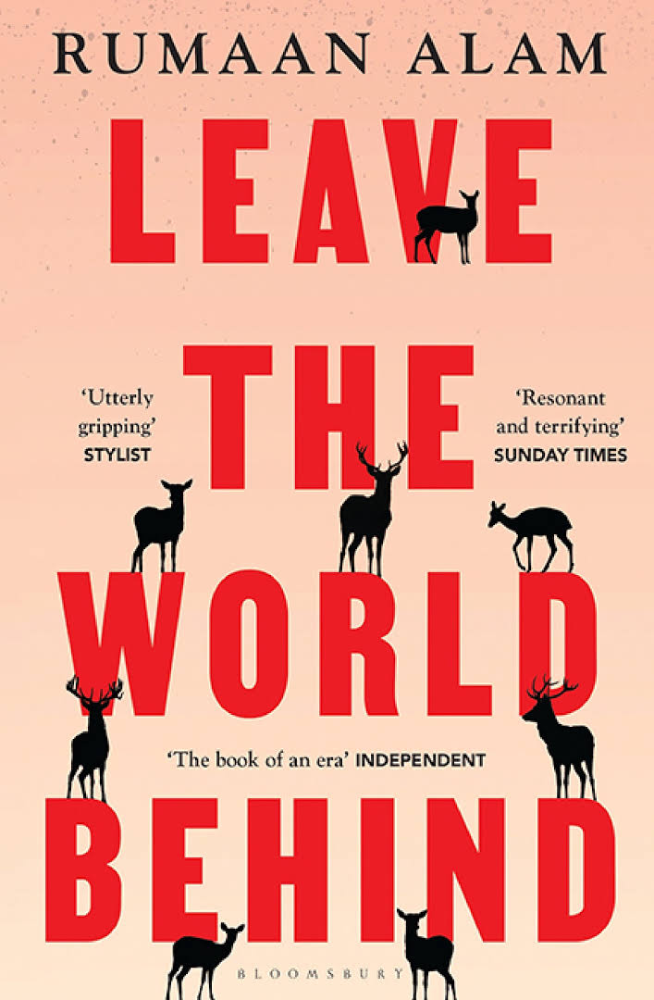
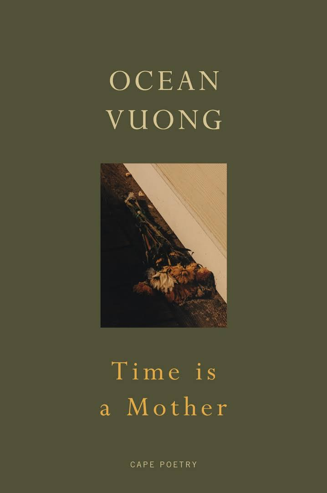
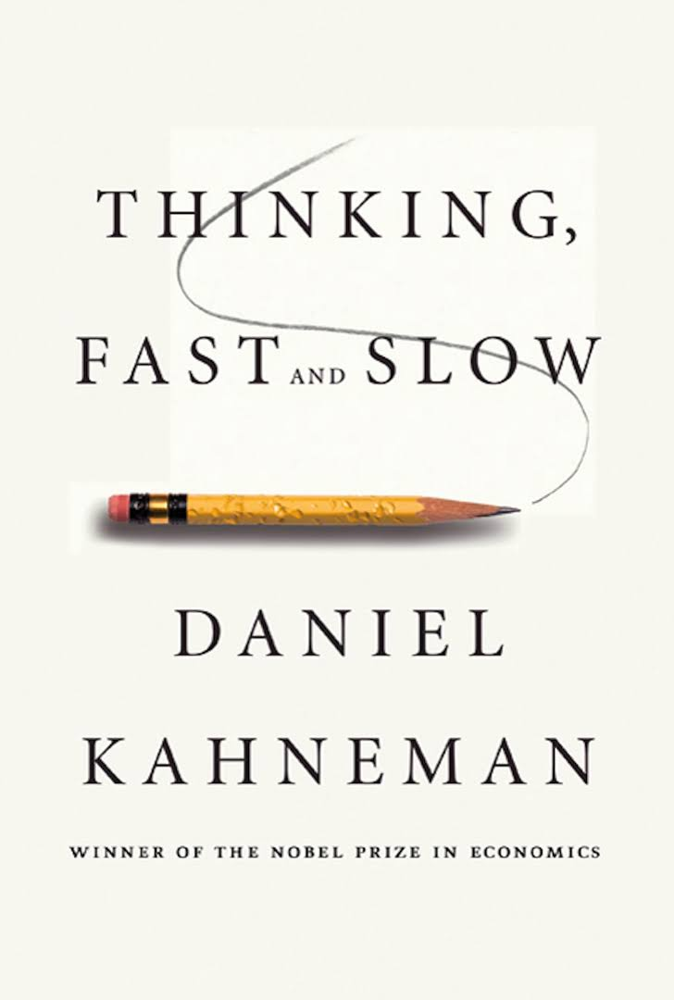

Welcome To E-Book Website
"Life without a Kindle is like life without a library nearby"
— Franz S. McLaren
CATEGORIES
Fiction

Little Woman
1868
Four sisters and their mother, whom they call Marmee, live in a new neighborhood in Massachusetts in genteel poverty. Having lost all his money, their father is serving as a chaplain for the Union Army in the American Civil War, far from home. The mother and daughters face their first Christmas without him.

Leave The World Behind
2020
Amanda and Clay head out to a remote corner of Long Island expecting a vacation: a quiet reprieve from life in New York City, quality time with their teenage son and daughter, and a taste of the good life in the luxurious home they've rented for the week

To Kill A Moking Bird
1960
Four sisters and their mother, whom they call Marmee, live in a new neighborhood in Massachusetts in genteel poverty. Having lost all his money, their father is serving as a chaplain for the Union Army in the American Civil War, far from home. The mother and daughters face their first Christmas without him.

Time Is A Mother
2022
Ocean Vuong searches for life among the aftershocks of his mother's death, embodying the paradox of sitting within grief while being determined to survive beyond it.

White Teeth
2000
At the center of this invigorating novel are two unlikely friends, Archie Jones and Samad Iqbal. Hapless veterans of World War II, Archie and Samad and their families become agents of England’s irrevocable transformation.
Non Fiction

A Beautiful Mind
1998
"A Beautiful Mind" is the biography of John Nash, a mathematical genius who made groundbreaking contributions to game theory but struggled with schizophrenia for much of his life. The book traces his early brilliance, his battle with mental illness, and his eventual recovery, culminating in his winning the Nobel Prize in Economics. It is a story of genius, struggle, and triumph over adversity.

Alan Turnki
2020
Amanda and Clay head out to a remote corner of Long Island expecting a vacation: a quiet reprieve from life in New York City, quality time with their teenage son and daughter, and a taste of the good life in the luxurious home they've rented for the week

To Kill A Moking Bird
1960
Four sisters and their mother, whom they call Marmee, live in a new neighborhood in Massachusetts in genteel poverty. Having lost all his money, their father is serving as a chaplain for the Union Army in the American Civil War, far from home. The mother and daughters face their first Christmas without him.
ashdasdyhayudasyu

Time Is A Mother
2022
Ocean Vuong searches for life among the aftershocks of his mother's death, embodying the paradox of sitting within grief while being determined to survive beyond it.

White Teeth
2000
At the center of this invigorating novel are two unlikely friends, Archie Jones and Samad Iqbal. Hapless veterans of World War II, Archie and Samad and their families become agents of England’s irrevocable transformation.
Library
< ">


Little Woman
1868
Four sisters and their mother, whom they call Marmee, live in a new neighborhood in Massachusetts in genteel poverty. Having lost all his money, their father is serving as a chaplain for the Union Army in the American Civil War, far from home. The mother and daughters face their first Christmas without him.

Leave The World Behind
2020
Amanda and Clay head out to a remote corner of Long Island expecting a vacation: a quiet reprieve from life in New York City, quality time with their teenage son and daughter, and a taste of the good life in the luxurious home they've rented for the week.
To Kill A Mockingbird
1960
Scout Finch lives with her brother, Jem, and their widowed father, Atticus, in the town of Maycomb, Alabama, during the Great Depression. Atticus is a lawyer, and defends a black man accused of raping a white woman.

Time Is A Mother
2022
Ocean Vuong searches for life among the aftershocks of his mother's death, embodying the paradox of sitting within grief while being determined to survive beyond it.
White Teeth
2000
At the center of this invigorating novel are two unlikely friends, Archie Jones and Samad Iqbal. Hapless veterans of World War II, Archie and Samad and their families become agents of England’s irrevocable transformation.
The Great Gatsby
1925
A story of the wealthy Jay Gatsby and his love for the beautiful Daisy Buchanan, set in the Roaring Twenties.
1984
1949
A dystopian novel set in a totalitarian society under constant surveillance, focusing on the life of Winston Smith.
The Catcher in the Rye
1951
A story about teenage angst and alienation, following Holden Caulfield as he navigates life in New York City.
Pride and Prejudice
1813
A romantic novel that explores the issues of class, marriage, and morality through the story of Elizabeth Bennet.
The Alchemist
1988
A tale of self-discovery, following a shepherd named Santiago on his journey to find treasure and fulfill his personal legend.
Top Daily

About Us
Welcome to E-book, the ultimate destination for digital book lovers and knowledge seekers! Our mission is to inspire minds, fuel creativity, and provide easy access to a wide range of high-quality eBooks across various genres and topics.
Contact